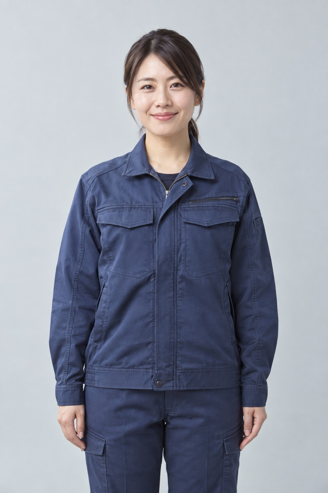
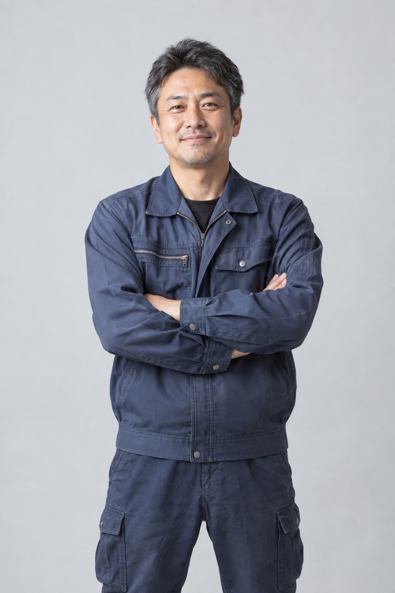
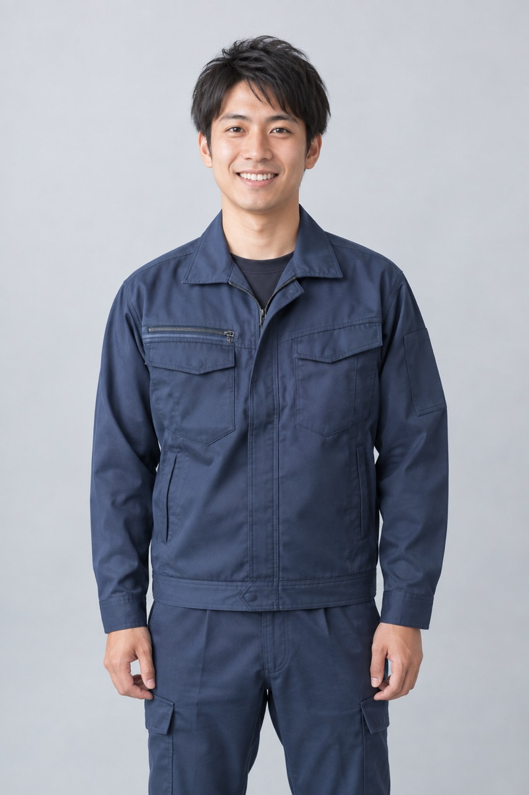
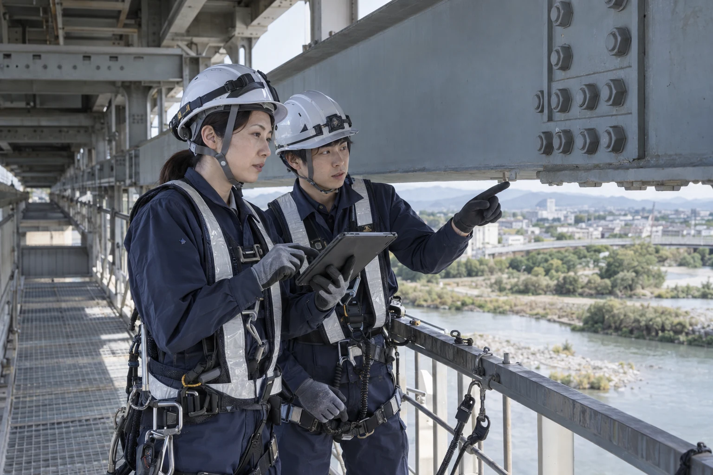

施工管理の経験がある方
これまでの経験
工程・安全・品質の管理や、現場での関係者との調整。
蒼建で担う仕事
道路舗装、橋梁の点検・整備、排水設備整備の現場で、工事の段取りと安全・品質の確認に携わります。
Recruit
Experience & Work
施工管理と現場作業・重機操作。それぞれの経験が、蒼建の仕事でどう生きるかをご紹介します。
これまでの経験
工程・安全・品質の管理や、現場での関係者との調整。
蒼建で担う仕事
道路舗装、橋梁の点検・整備、排水設備整備の現場で、工事の段取りと安全・品質の確認に携わります。
これまでの経験
舗装機械の操作や道路工事、橋梁・排水設備の点検・整備など、現場で培った実務経験。
蒼建で担う仕事
舗装機械を用いた道路の整備や、橋梁・排水設備の点検と整備に、現場の一員として携わります。
Interview

道路舗装
INTERVIEW #01
仕上がった道を車や人が通る。その景色を見ると、地域の暮らしを支えている実感が湧きます。一つひとつの作業を、丁寧に積み重ねたいです。

橋梁整備
INTERVIEW #02
現場では、小さな気づきも仲間に伝えるようにしています。これまでの経験を生かしながら、互いの視点を大切にして、橋の安全を支えたいです。

排水設備
INTERVIEW #03
普段は意識されにくい排水設備も、暮らしに欠かせないもの。仲間と声をかけ合いながら、雨の日も安心して過ごせる街づくりに関わっています。
人物写真はAI生成、社員の声は架空のサンプルです。

Our Team
現場での経験を生かしたい方。仲間と協力しながら、地域に残る仕事に携わりたい方。安全確認や声かけを大切にできる方と、一緒に街を支えていきたいと考えています。
経験年数だけでなく、これまで担当した作業や、これから取り組みたいことを知るところから始めます。
Job Description